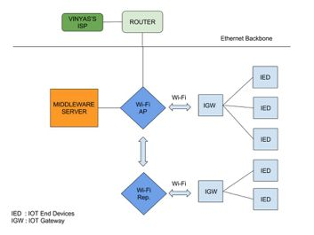
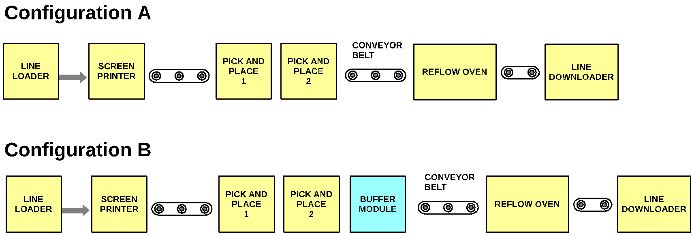
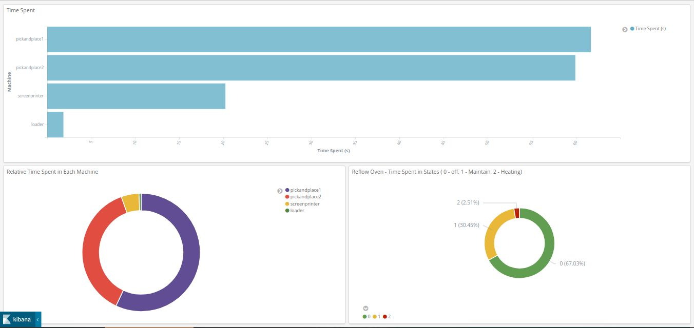

Various sensors such as vibration, proximity, temperature sensors and current meters were placed along the automated assembly line as shown in Fig. 1.
Data Flow Architecture - Data flows from sensors connected to IOT End-Devices at the factory via IOT Gateway and Middleware server to the data store server at RBCCPS, IISc Bangalore, as shown in Fig. 2. The IOT Gateways receive sensor data over GPIO, MODBUS and BLE and use MQTT service internally before forwarding them over REST APIs to the Middleware server which hosts an Elasticsearch database. The data is time stamped at the IOT Gateways and the clocks of the gateways are synchronised using NTP service with the NTP server running on the Middleware. The communication network architecture is shown in Fig. 3 which consists of two wireless access points creating a subnet to which the IOT gateways and Middleware connect to. The architecture of microservices of the IOT gateway is in Fig. 4.
The Middleware at Vinyas and a cloud compute server are connected over a VPN for transparent accessibility of the elasticsearch database. The cloud server is leveraged to perform event detection and state estimation algorithms on the incoming data every 15 minutes. Kibana, a visualization service, runs at both the middleware and the compute server for inspection of the incoming raw data, detected events and the estimated states.
This involves the development of a detailed simulation model of the manufacturing line for prediction, bottleneck identification, what-if analysis, optimization and real-time monitoring. It was developed using SimPy python library, a discrete-event simulator. The assembly line consists of several machines connected over conveyor belts. PCBs flow over the belts and are processed by each machine in sequence. Human operators are responsible for loading stacks of PCBs onto the line, and for the refilling of consumables. The block diagram of the assembly line is shown in Fig. 5.
Among all machines in the SMT assembly line, the reflow oven typically accounts for the highest energy consumption. Fig. 6 shows the distribution of energy consumption across the main components in the SMT assembly line at the Vinyas factory. The reflow oven is seen to account for more than 85% of the total energy consumption in the line. The throughput bottleneck is typically the pick and place operation which incurs the highest latency. As a result, the reflow oven typically remains powered on yet unutilized for a large fraction of the time. For such lines, we have suggested a buffering technique that may help improve the utilization of the reflow oven thereby improving the energy efficiency. PCBs can be buffered after the pick and place operation and sent through the reflow oven in bursts. Thus, the reflow oven can be powered on for only a fraction of the production period.
We evaluate the impact of such a buffering on the throughput and energy efficiency of the line. Fig. 7 shows two configurations (with and without buffering) of the assembly line evaluated using simulations. The model has been calibrated using data that was collected from the real assembly line using an IoT framework. The simulations predicted a 2.7x reduction in the average energy consumption achievable via buffer insertion without significantly affecting the line throughput. Fig. 8 shows the variation of efficiency with changing Reflow-oven turn-on threshold for buffer size 128. This work was submitted and accepted at the IEEE 2018 International Conference on Internet of Things and Intelligence Systems (IoTAIS), 1 to 3 November 2018, Bali (Indonesia).
Algorithms were developed for detection of events in the machines. These events were further used to generate parameters for the simulation model. The events are as follows for the different machines:
The following parameters are estimated from the event statistics for the different machines on a per board basis:
2D Dashboard - We have developed a visualization dashboard in kibana that provides statistics of the parameters mentioned above. The dashboard gives the management at Vinyas a summary statistical analysis of the different machines states and energy consumption.
3D Model - A 3D model of the factory floor has been developed which can show the events occuring in the factory based on the events generated from the simulated model using OpenSim. The 3D model updates simulation parameters every hour. The simulator talks to the OpenSim over an Internet Relay Chat (IRC) channel. A proxy server is used at the Middleware to multiplex the incoming sensor data over REST APIs to the elasticsearch database, 3D model and the real-time stream analysis program.